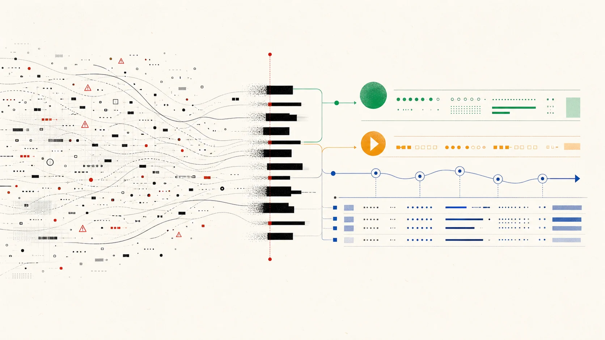
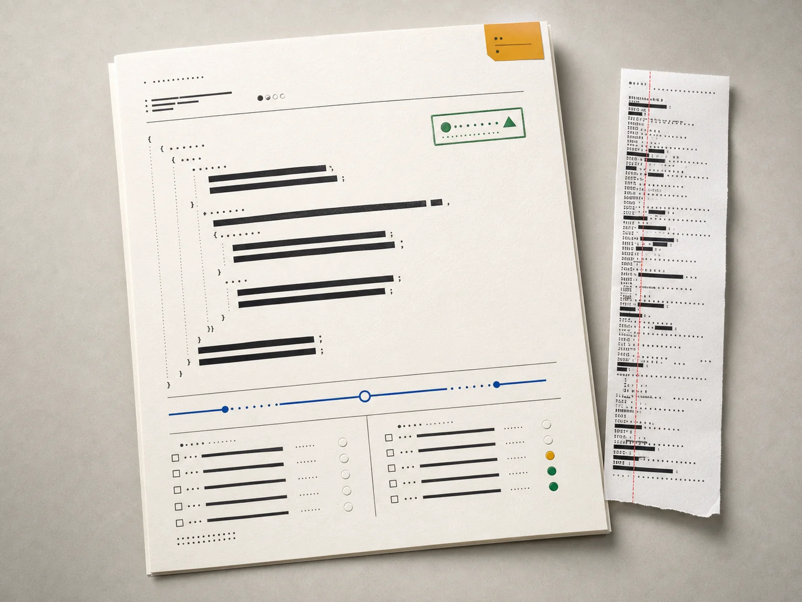

Load
One JSON object, an array, or JSONL. Reject impossible status, latency and header shapes.
01 Local evidence refinery
I built Support Trace Analyzer for the uncomfortable gap between “the API is down” and an engineering team having enough safe evidence to act. It turns raw JSON or JSONL into a redacted, classified, reproducible incident bundle—entirely on your machine.

The premise / 02
A useful escalation needs a request ID, status, sanitized payload, reproducible steps, and an honest confidence level. This tool creates that shape before evidence is pasted into another system.
It is deliberately not an observability platform, an automatic root-cause detector, or a black-box AI classifier.
Its rules are boring on purpose: readable, testable and easy for a support engineer to challenge.
Try the workflow / 03
Choose a stage. The evidence below is the checked-in fixtures/rate-limit.json, not marketing copy.
Trust boundary / 04
One JSON object, an array, or JSONL. Reject impossible status, latency and header shapes.
Walk every nested value. Strip secret-shaped keys, Bearer tokens, API keys and email addresses.
Apply inspectable rules for authentication, rate limit, upstream, latency and contract failures.
Render observations, next actions, reproduction steps and explicit escalation criteria.
The report renderer never sees the original evidence. Redaction happens before a Diagnosis exists, keeping the sensitive boundary small enough to test directly.

Case file 429 / 05
A synthetic case based on a common developer-support pattern.
A copied 429 response includes a two-second Retry-After, a request ID—and a live Bearer credential.
redact removes the credential recursively. validate confirms the intake contract before any handoff exists.
The tool returns rate_limit / P2 / high and recommends bounded backoff, jitter and concurrency measurement.
cluster ignores volatile request IDs and timestamps, grouping the morning failures under one safe fingerprint.
Engineering receives one reviewed artifact instead of three screenshots. The secret is gone; the claim is narrower; the next check is obvious.
Use it locally / 06
See the sanitized copy before anything leaves your machine.
$ tracekit redact case.jsonReject malformed evidence with a scriptable non-zero exit.
$ tracekit validate case.jsonlCreate reviewed Markdown or machine-readable JSON.
$ tracekit analyze case.json \
--output incident.mdGroup repeated sanitized shapes without volatile identifiers.
$ tracekit cluster morning.jsonl$ git clone https://github.com/Emmanuelasika/support-trace-analyzer.git
$ cd support-trace-analyzer && python -m venv .venv
$ source .venv/bin/activate && pip install -e .
$ tracekit analyze fixtures/rate-limit.json --output incident.mdHonest limits / 07
01Pattern redaction can miss unusual secrets. Review every output.
02Classification is routing guidance, not root-cause proof.
03Fingerprints identify similar shapes, not global incidents.
04Names, phone numbers and arbitrary PII need another control.
Open source / MIT
Inspect every rule. Run the fixture. Read the tests. Change the heuristics to match the product you support.
Explore the repository ↗